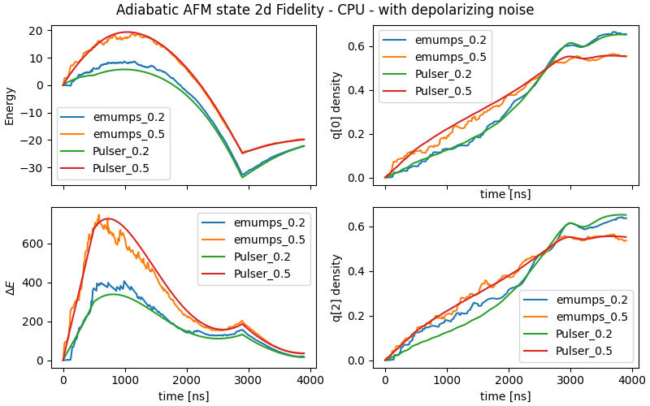
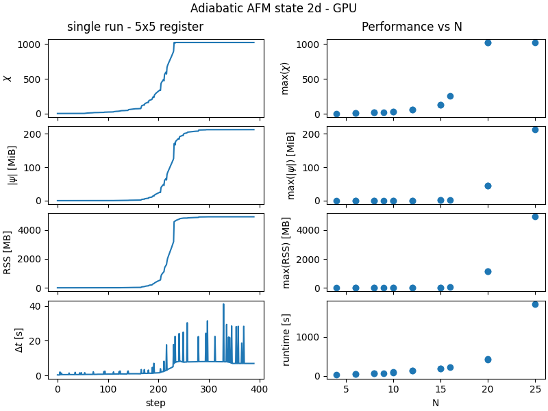

Noise
Here, we analyze the time evolution of a quantum state using the adiabatic sequence [1] under the influence of depolarizing noise. Typically, quantum systems are affected by interactions with their surrounding environment, making them open systems. To model the dynamics of such noisy quantum systems, one typically solves the Lindblad "Master" equation, which governs the time evolution of the density matrix, \(\rho\).
The following plot illustrates the time evolution of the initial state under the adiabatic \(2\text{D}\) sequence. This is done by tracking the evolution of the energy (top left), variance (bottom left), and magnetization (top and bottom right) in the presence of depolarizing noise for a \((2\times2)\) qubit register (\(4\) qubits). Specifically, we compare results from two different methods:
-
Pulser: explicitly solves the Lindblad Master equation, obtaining full information about the noise in the system through its probability distribution in phase space, as given by the density matrix
-
emu-mps: uses a Monte Carlo (MC) method to probe the noise by obtaining sample statistics from its underlying probability distribution (see noise.md for further details).
The goal of this study is to demonstrate that the results obtained using the Monte Carlo method implemented in emu-mps are qualitatively similar to those found by solving the Lindblad master equation in Pulser.

The key advantage of the Monte Carlo method, if the Hilbert space of \(N\) qubits has dimension \(dim(H) = d^N\), then propagating the density matrix using the Lindblad equation requires handling an object of size \([dim(H)]^2\). In contrast, the stochastic sampling of states with emu-mps involves the propagation of state vectors of size \(dim(H)\) only. This drastically reduces the memory cost of the simulation, especially when the number of qubits is large. In return, the Monte Carlo method requires performing many runs if sample statistics are desired.
Accuracy of the method
In this study, we consider two different depolarization noise rates: \(0.2\) and \(0.5\). These represent different levels of interaction with the environment, with \(0.5\) introducing stronger noise effects than \(0.2\). For the emu-mps simulations, the following parameters are used:
-
Monte Carlo runs: 100
-
Precision: \(10^{-6}\), which is better than the default value (\(10^{-5}\)), as recommended in the warning found here.
Since the Monte Carlo method in emu-mps relies on stochastic sampling, the number of Monte Carlo runs chosen by the user determines the accuracy of the simulation. Each data point (e.g., in the energy plot) in the emu-mps results represents the statistical average observable value across all Monte Carlo runs at a given time \(t\). The plots demonstrate that with \(100\) Monte Carlo runs, emu-mps already yields qualitative agreement with Pulser. We expect that, increasing the number of Monte Carlo runs should smoothen the emu-mps curves further, leading to even closer agreement with the Pulser method.
The overall energy of the system initially rises due to the presence of depolarizing noise, which introduces interactions between the system and the environment. This interaction reduces even further the strength of the spin correlations in the paramagnetic state. The system with higher noise rate (\(0.5\)) experiences stronger interaction effects, leading to a more pronounced increase in both the energy and energy fluctuations \(\Delta E\). However, as the system continues to evolve, it begins to move toward an antiferromagnetic (AFM) correlated state, causing the energy and fluctuations to decrease. During this middle phase, the spin correlations become more meaningful, and the state grows gradually ordered. Eventually, the system undergoes a quantum phase transition at \(t \approx 3000\) ns, moving from a paramagnetic state, where the spins are randomly aligned, to a true AFM state with well-defined spin ordering. This transition is reflected in the further reduction of energy fluctuations as the state becomes antiferromagnetic.
Performance
Above we discussed the behaviour of an average over a larger number of noisy runs. Now, let us discuss the performance characteristics of a single run in more detail.
In the following graph we show the performance characteristics of a single run of the above sequence, as a function of the time step, and as a function of qubit number. Do note that we have used the default precision of \(10^{-5}\), because that makes the parameters the same as the noiseless adiabatic benchmark here. This allows us to discuss the effect of adding Lindbladian noise to simulations on the performance characteristics.

One thing we immediately see is that all the bond dimensions are larger than in the noiseless case. As discussed above, the depolarizing noise pumps energy into the system, causing more high-energy states to be excited. When averaged over many runs, this causes correlations in the system to decrease, but during a single run, this means many highly-entangled states are excited by the quantum jumps, leading to a stark rise in the bond-dimension. Most of the difference in memory usage and runtime can be attributed to the fact that the quantum state being simulated is more complex than in the noiseless case. However, two effects particular to the simulation of noisy systems are visible in the graph:
- The peaks in the \(\Delta t\) graph correspond to the occurence of a quantum jump
- In the absence of a quantum jump, the time for a single step is still longer.
Regarding the first item, on the cluster you will occasionally see spikes in the time required for a single step even in the noiseless case. In that case, it is caused by load on the hardware from other jobs and more subtle factors. When doing quantum jumps, it is actually a feature of the algorithm. When doing a timestep according to the config parameter dt, the time evolution generally overshoots the time when a jump needs to occur. A numerical root-finding algorithm is employed to evolve the state to the actual jump time, after which the quantum jump is performed and the system is evolved again to complete the timestep of length dt. This means that a minimum of three time evolutions have to be performed when a quantum jump occurs in the middle of a dt interval. Looking at the height of the peaks in runtime, we see that they are mostly 3 or 4 times the height of the baseline, meaning that the root-finding algorithm converges to the collapse point in 1 or 2 steps the majority of the time, which is good performance. Note that the number of quantum jumps in the graph is quite large, because the depolarizing rate is 0.5, which is much bigger than any of the noise rates in the physical device.
Regarding the second point above, the effective Hamiltonian used to evolve the system is no longer Hermitian (see here), and our time-evolution algorithm is more expensive on non-Hermitian matrices. The overhead is dependent on the bond-dimension of the system. At the start, when the bond-dimension is close to 1, we see an overhead of about 10% runtime per step, but as the bond-dimension increases to 1000, it grows to around 50%.
Since the runtime and memory required to compute a single time step depend polynomially on the bond-dimension, the most important question in determining the effect of noise on the performance of the simulation is how the bond-dimension of the state will be affected by said noise. In the example presented here, we used an adiabatic sequence for anti-ferromagnetic state preparation, and the noise can be seen to negatively impact adiabaticity of the sequence close to the quantum phase transition, just as if the qubit number increases[1]. This, in turn, means that for this specific pulse sequence, noise negatively impacts the size of the system that can still be simulated. The degree to which this effect manifests will depend on the sequence being simulated, and the type of noise under consideration.